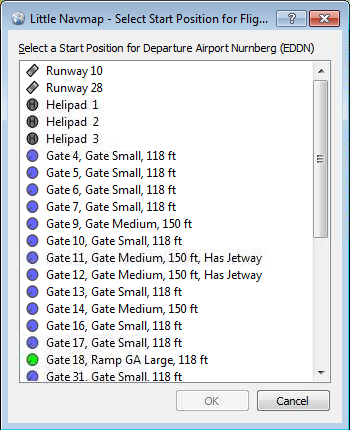
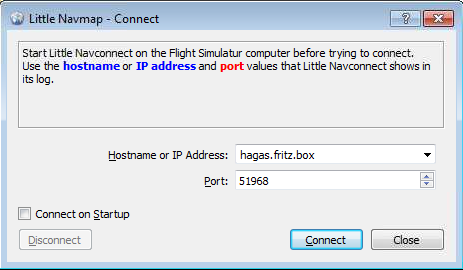

Version 0.9.7.develop
An installer or setup program is not available.
Do not extract the archive into the folder c:\Program Files\ or c:\Program
Files (x86)\ since you will need administrative privileges for some Windows versions. Since Windows keeps
control on these folders other problems might occur like replaced or deleted files.
Extract the Zip archive into a folder like c:\Own Programs\Little Navmap. Then start the program by
double-clicking littlenavmap.exe. See First Start for more information on the
first start after installation.
Little Navmap is a 32-bit application and was tested with Windows XP 32-bit, Windows 7 64-bit and Windows 8.1 64-bit.
Picture above (Click to see large version): Little Navmap quick overview showing most important functions.
The user interface of Little Navmap consists of several dock windows that are arranged around the main window which contains the map view. The dock windows can be moved around in their docked position and can be detached from the main window by simply dragging them outside of the main window. All docks can be closed if they are not needed. You can even drop docks on each other to create a tabbed view (tabs will appear at the bottom of the dock stack in this case).
Toolbars are also movable if you click on the left handle and can be closed or undocked from the main window too.

Picture above (Click to see large version): Little Navmap with map and sourrounding docked windows.
Little Navmap is currently only available in English. I will happily support anybody who would like to translate the user interface into any other language. Despite using the English language in the user interface the locale settings of the operating system will be used. So e.g. on a German Windows you will see comma as a decimal separator instead of the English dot.
To avoid confusion: The screenshots in this manual were taken using German locale. This means that comma is used as a decimal separator and dot as a thousands separator.
Units cannot be changed currently and are adapted to aviation needs. So feet, nautical miles and knots are used.
World coverage for elevation data is not available for all countries and currently ends at 60 degree north, also strange artifacts can occur which I cannot influence (like in Italy south of the Alps).
The legend explaining all the map icons and the Flight Plan Elevation Profile is available in the
Information dock window or Little Navmap Legend.
Options dialog on the Map
Display tab. The criteria below are used to calculate the rating. Each item gives on star:
Plain or Simple map themes or use the
Mercator projection.
Center
Flight Plan or Go to Home. Zoom once in and out using the mouse wheel to fix this.
Plain or Simple map themes or use the zoom buttons or the keyboard or the map controls.
Delete the settings and the database files if the program crashes during start up. In Windows 7 these can be
found in c:\Users\YOURUSERNAME\Appdata\Roaming\ABarthel. Delete the file
little_navmap.ini and the directory little_navmap_db.
The Scenery Library Dialog dialog will be shown when starting Little Navmap the first time. From there you can select all recognized Flight Simulators and load their scenery libraries into Little Navmap's internal database. One database is kept for each simulator and can be changed on the fly in the Scenery Library menu.
A warning dialog will be shown when starting Little Navmap the first time on a system without any flight simulator installations. See chapter Running without Flight Simulator Installation for more information on this.
This chapter describes all the menu items of Little Navmap. You will find most of this functionality on the toolbars as well which are not be described separately. Key combinations can be seen on the menu items and are not listed separately in this manual.

Picture above: Menu and toolbars.
You can load, save or create new Flight Simulator PLN files. FS9 files are not supported.
An opened flight plan file will be reloaded on start up (reload and centering can be switched off in the
Options dialog on the Startup and User Interface tab).
You can add one or more Google Earth KML or KMZ files to the map display. All added KML or KMZ files will be
reloaded on start up (reload and centering can be switched off in the Options dialog on the
Startup and User Interface tab).
All loaded KML files can be removed from the map with the menu item Clear KML from Map.
Stops loading of map data from the internet. This affects the OpenStreetMap and OpenTopoMap map themes and the elevation data.
Allows to undo and redo all flight plan changes.
A parking spot/gate/ramp/fuel box, runway or helipad can be selected as a start position at the departure airport. A parking position can also be selected in the map context menu item Set as Flight Plan Departure. If no position is selected the longest primary runway end is selected automatically as start.

Picture above: The start position selection dialog for EDDN.
Switches flight plan drag and drop edit mode on the map on or off. See Flight Plan Editing.
Deletes all intermediate waypoints and connects departure and destination using a great circle line.
Creates a flight plan that uses only VOR and NDB stations as waypoints and tries to ensure reception of at least one station along the whole flight plan. Note that VOR stations are preferred before NDB and DME stations are avoided if possible. Calculation will fail if not enough radio navaids can be found between departure and destination. Buid the flight plan manually if this is the case.
Uses Jet Airways to create a flight plan. The resulting minimum altitude is set into the flight plan altitude
field. A simplified east/west rule is used to adjust the cruise altitude to odd/even values (this can be switched
off in the Options dialog on the Flight Plan tab).
The default behavior is to jump from the departure airport to the next waypoint of a suitable route and vice
versa for the destination. This can be changed in Options dialog on the Flight Plan tab
if VOR or NDB stations are preferred as transition points to airways.
The airway network of Flight Simulator is not complete (the north Atlantic tracks are missing for example - these change daily), therefore calculation across large ocean areas will fail. Create the route manually as a workaround.
Uses Victor Airways to create a flight plan. Everything else is the same as in Calculate high
Altitude.
Use the value in the altitude field of the flight plan to find a flight plan along Victor and/or Jet airways.
Calculation will fail if the altitude value is too low. Everything else is the same as in Calculate high
Altitude.
Swaps departure and destination and reverses order of all intermediate waypoints. A default runway is assigned as the new departure start position.
Goes to home area that was set using Set Home using the saved position and zoom distance.
Go to the center point used for distance searches. See Set Center for Distance Search.
Shows the whole flight plan on the map.
Zooms to the user aircraft if connected to a flight simulator using Little Navconnect and keeps the aircraft centered.
Removes the user aircraft trail if connected to a flight simulator.
Jumps forward or backward in the map position history. The complete history is saved and restored when starting Little Navmap.
Increases or decreases details on the map. More details mean more airports, more navaids, more text information and bigger icons.
A flat projection that gives the most fluid movement sharpest map when using the OpenStreetMap and OpenTopoMap themes.
Shows earth as a globe which is the most natural projection. Movement can stutter slightly when using the
OpenStreetMap and OpenTopoMap themes. Use the Simple or Plain map
themes to prevent this.

Picture above: Spherical map projection with Simple
map theme selected.
This is an online raster (i.e. based on images) map that includes a hill shading option. Note that hill shading does not cover the whole globe.

Picture above: View at a Swiss airport using OpenStreetMap theme and hill shading.
A beautiful online raster map that mimics a topographic map. Includes hill shading and elevation contour lines at lower zoom distances. Disadvantage is that airports and navaids are hard to recognize in the colorful map.

Picture above: View at the eastern Alps using OpenTopoMap theme. A route is drawn north of the Alps.
This is an offline political map using colored countries. The boundaries and water bodies are depicted fairly coarse. The map is included in Little Navmap. Has an option to display city and country names.
A very simple offline map. The map is and included in Little Navmap. Has an option to display city and country names. Boundaries and water bodies are depicted fairly coarse.
Add-on airports are always shown independent of the other airport map settings if this option is selected.
Show airports that have at least one runway with a hard surface.
Show airports that have only soft surfaced runways. This type of airport might be hidden on the map depending on zoom distance.
Shows empty airports. This button or menu item might not be visible depending on settings in the
Options dialog on the Map Display tab. The status of this button is combined with the
other airport buttons. This means: You have to enable soft surfaced airport display and empty airports to see
empty airports having only soft runways.
An empty airport is defined as one which has neither parking nor taxiways nor aprons and is no add-on. These airports are treated differently in Little Navmap since they are the most boring of all default airports. Empty airports are drawn gray and behind all other airports on the map.
Shows or hides these facilities or navaids on the map. Navaids might be hidden on the map depending on zoom distance. The flight plan and aircraft trail are shown independent of the zoom distance.
Shows a latitude/longitude grid as well as the meridian and anti meridian (date line) on the map.
Availability of these options depends on the selected map theme. See Theme.
One menu item is created for each Flight Simulator installation or database found. These menu items allow switching of databases on the fly. The menu item is hidden if only one Flight Simulator was found.
This opens Little Navmap's database directory in explorer. See Running without Flight Simulator Installation for more information on copying database files between different computers.
Opens the Load Scenery Library dialog. See Load Scenery Library
Dialog for more information. This menu item is disabled if no flight simulator installations are found.
Opens the Connect dialog that allows to connect to a Flight Simulator using the Little
Navconnect agent. See Connecting to a Flight Simulator for more information.
This will re-enable all dialogs that were disabled by clicking Do not show this dialog again or
similar messages.
Opens the Options dialog.
Opens or closes these dock windows.
Shows or hides these toolbars and the statusbar.
Shows this help in a web browser.
Shows the map legend in the information dock window. You can also access the navmap legend here: Little Navmap Legend
Shows version and revision number for Little Navmap, also contains links to the database directory, configuration file, log file and the author's e-mail address.
Information about the application framework that is used by Little Navmap.
The statusbar shows various indications (from left to right):

Picture above: Status bar with message about the last action on the left side and a tooltip that indicates what is currently shown on the map. The map shows only airports with runways longer than 4000 feet. No navaids are shown. The map detail level was increased once and the map coordinates not shown since cursor is not above the map.
Use click and drag to move the map and the mouse wheel to zoom in or out. You can also use the overlay buttons on the right side of the map.
Alternatively use the cursor keys to scroll the map and + and - to zoom in and out.
Alt+Left and Alt+Right goes forward or backward in the map position history. Do not
forget to activate the map window by clicking into it before using any keys for movements.
Hovering the mouse over the map will show tooltips for all map objects like airports, VOR, NDB, airways, parking,
fuel box and towers. The tooltip is truncated and shows a message More... if it gets too long. In
that case reduce details or zoom in.
The sensitivity for tooltip display can be adjusted in the Options dialog on the Map
Display tab.

Picture above: Tooltip with information for a French airport.
A single click on an airport or navaid shows details in the information dock window.
A double click zooms in showing either the airport diagram or the navaid closely and also shows details in the information dock window.
The mouse click sensitivity can be adjusted in the Options dialog on the Map Display
tab.
The display will change from a single icon to an airport diagram if you zoom in deep enough to an airport. The diagram shows all taxiways, parking spots, gates, runway and much more.
The airport diagram provides more information through tooltips for parking and tower positions.
See the Nav Map Legend for details about the airport diagram.

Picture above: High level view of the airport diagram of EDDH.

Picture above: Detailed view of the airport diagram. Shows blue gates on the right and a few green general aviation ramp parking on the left. Long displaced threshold of runway 33 is visible.
The flight plan editing mode is switched on per default but can be disabled using the toolbar or Main
Menu -> Flight Plan -> Edit Flight Plan on Map.
You can use the keyboard, the mouse wheel or the map overlays to scroll and zoom while editing the route.
The following functionality is available:

Picture above: Inserting a navaid into a flight plan leg by clicking and moving the leg line. A tool tip for the navaid is shown.

Picture above: Replacing VOR TRA in the flight plan with another one by simply clicking and moving the waypoint TRA onto KLO. Selection menu pops up for disambiguation.
Shows detailed information in the information panels for the nearest airport or all navaids near the cursor.
See the Information Dock Window for details.
Starts a measurment line on the first click. Second click ends measuring and keeps the line. All measurement lines are saved and will be restored on next start up.
You can use the keyboard, mouse wheel or the map overlays to scroll and zoom while dragging a line.
Right click or any click outside of the map window cancels the measurment line editing.
Measurement lines use nautical miles as unit. Feet will be added as unit if they are short enough so one can measure e.g. takeoff distance for crossing takeoffs and more around an airport.
A great circle gives the shortest distance from point to point on earth but does not use a constant course. For that reason the measurement line will show two course values. One for the start and one for the end position.
Course is indicated in degrees true. Additional information like ident or frequency will be added to the line if the measurement starts at a navaid or an airport.
See the Nav Map Legend for details on measurement lines.
A rhumb line is a line of constant course and used between the waypoints of an airway or when approaching a VOR or NDB station. Distance between points is longer that the great circle route.
The course for a rhumb line is normally indicated in degrees true. Course will be indicated in degrees magnetic if the measurement starts at a navaid or an airport that have magnetic variation. Additional information like ident and frequency will be added to the line in this case.
This menu item is active if you right click at the end of a distance measurement line. Removes only the selected line.
Shows multiple red range rings around the clicked position. Number and distance of the range rings can be changed
in the Options dialog on the Map Display tab. A label indicates the radius of each ring
in nautical miles.
Shows a ring around the clicked radio navaid (VOR or NDB) indicating the navaid's range. A label shows ident and frequency and the ring color indicates the navaid type.
Menu item is active if you right click is at the center point of a range ring. Removes the rings from the map.
Removes all rings and distance measurement lines from the map.
This is active if the click is at an airport, an airport parking position or a fuel box. It will either replace the current flight plan departure or add a new departure if the flight plan is empty.
If the clicked object is an airport the default runway will be used as starting position. The airport and parking position will replace both the current departure and start position if a parking position is clicked within an airport diagram.
This is active if the click is at an airport. It will either replace the flight plan destination or add the airport if the flight plan is empty.
Adds the clicked object to the nearest flight plan leg. The object will be inserted before departure or after the destination if the position is not along a leg but nearby departure or destination. If no airport or navaid is near the clicked position a user position will be added to the flight plan. The name of the navaid to add is shown in the menu item.
Deletes the clicked airport, navaid or user position from the flight plan.
Shows the nearest airport or navaid in the search dialog. The current search parameters are reset.
Sets the center point for the distance search function. See Distance search.
Sets the home position and zoom distance.
Two search tabs are available for airport and navaid (VOR, NDB and waypoints) search.
These tabs contain multiple rows of search filters that can be switched on and off with the drop down menu on the hamburger button on the top right.
Filters are defined by various controls which are mostly self explaining. Only text filters and the tri state
checkboxes like Lighted, Approach or Closed need a few extra remarks
below.
All filters can be used together where all conditions have to be met (and operator). Filters except
the distance search filter are applied immediately. The distance search is applied after a short delay for each
change.
A tooltip on the blue question mark shows a quick help about searching.
The standard is to search for entries that start with the entered text.
The placeholder * stands for any text. Once a * is included in the term, the standard
search (match start of text) is no longer used so you might have to add a * at the end of the search
term too.
The search is negated (find all entries that do not match) if the first character in a search box is a
-.
Note that all of the above does not apply to numeric fields like Runways: Min or Altitude:
Min.
These are used to filter airports by presence of certain facilities or properties.
Colors and look of these checkboxes vary with theme and operation system. So instead of gray another color might
be used (red fill on Linux or a - for Mac OS X).
This function allows you to combine all other search options with simple spatial search.
The checkbox Distance has to be selected to enable this search. The result will include only
airports or navaids that are within the given minimum and maximum range of nautical miles from the search center.
This allows you to quickly search for a destination that is within the range of your aircraft and fulfills other
criteria like having lighted runways and fuel.
To restrict the search further you can select a direction (North, East, South and West).

Picture above (Click to see large version): A complex search: Find all airports within a distance between 200 and 400 nautical miles from Frankfurt (EDDF). Airports should have a rating greater than 0 and should have at least one lighted runway. Military and closed airports are excluded. The resulting airports are highlighted on the map by selecting them in the search result table.
All selected elements in the table view will be highlighted on the map using a black/yellow circle. Multi
selection using Shift- or Ctrl-click are possible.
The header of the table view allows the following manipulations:
The program saves the column widths and positions until Reset View is executed.

Picture above: Airport search result table. All additional search options are hidden by using the drop down menu of the hamburger button on the top right.

Picture above: Navaid search. All search options are visible.
Search is limited to ICAO region LI (Italy) and VOR and NDB stations.
A double click on an entry in the table view shows either an airport diagram or zooms to the navaid. Additionally, details are shown in the information panel. Single click selects and object and highlights it on the map using a black/yellow circle.
Same as the Map Context Menu.
Shows either the airport diagram or zooms to the navaid on the map.
Takes the text of the field under the cursor and sets the search filter for an including or an excluding search. This only enabled to text columns.
Clears search filters and shows all entries again in the search result table view.
The table view does not show all entries initially for performance reasons. This menu item allows to load and show the whole search result. Only a part of the entries is shown again after a search filter is modified or the sort order is changed. The number of all, visible and selected entries is shown at the bottom of the tab.
Be aware that showing all navaids and airports can take some time especially if they are highlighted on the map when selecting all in the search result. The program does not crash but needs a few seconds to highlight all on the map.
Same as the Map Context Menu.
Copies the selected entries in CSV format into the clipboard. This will consider changes to the table view like column order and sort order. The CSV will include a header line.
Selects all visible entries. To select all available entries
the function Show All has to be used first.
Resets the sort order, the column order and column widths back to default.
Same as the Map Context Menu.
The top shows a label that contains departure, departure position (parking, runway or helipad), destination, traveling time and flight plan type.
Besides the label there are three input fields on top of this dock window:
Leg Time and ETA (estimated time of arrival at a waypoint given 0:00
as start time). It is not saved with the flight plan and not used for simulator user aircraft calculations.
The table view allows the same operations as the search table view except sorting. See here.
Note on the table columns Course °M and Direct °M:
Direct °M: This is the rhumb line of constant course connecting two waypoints of a leg. Depending
on route and distance it can differ significantly from the course of the great circle line. Use this course if
you travel along airways or towards VOR or NDB stations. Opposed to the course shown by the Flight Simulator
GPS unit this will give you the precise radial when approaching a VOR or NDB on a flight plan.
Course °M: This is the start course of the great circle route connecting the two waypoints of the
leg. Use this course if you travel long distances without navaids.

Picture above: The flight plan dock window.
A double click on an entry in the table view shows either an airport diagram or zooms to the navaid. Additionally, details are shown in the information panel. Single click selects and object and highlights it on the map using a black/green circle.
Moves all selected flight plan legs up or down in the list.
Deletes all selected flight plan legs. Use Undo if you deleted legs accidentally.
Same as the Map Context Menu.
Shows either the airport diagram or zooms to the navaid on the map.
Same as the Map Context Menu.
Will show the range rings for all selected radio navaids in the flight plan. You will get a range circle for each radio navaid on the flight plan if you simply select all legs of the flight plan and use this function.
Otherwise, the same as the Map Context Menu.
Same as the Map Context Menu.
Copies the selected entries in CSV format into the clipboard. The CSV will include a header. This will consider changes to the table view like column order.
Selects all flight plan legs.
Resets the column order and column widths back to the default view.
Same as the Map Context Menu.
This dock window contains text information about airports in several tabs and information for one or more navaid in another tab. Also, included are the legend for the navigation symbols and the general map legend which depends on the selected map theme.
All information can be copied into the clipboard as formatted text.
A link Map allows jumping to the shown airport or navaid on the map.

Picture above: Airport information overview. Additional tabs show information for runways, COM frequencies and approaches.

Picture above: Navaid information. Two navaids were close to the cursor when clicked.
This dock window shows information similar to a flight management computer about the user aircraft. Little Navmap has to be connected to the simulator to enable this functionality. The dock window contains one tab that shows general aircraft data like gross weight and another tab that displays flight data, flight plan progress, weather and ambient parameters.
See Connecting to a Flight Simulator for more information on this topic.

Picture above: Aircraft information when connected to a Flight Simulator.

Picture above: Progress and ambient information of the current
flight situation. Some fields or tables like Next Waypoint are only available when a flight plan is
loaded.
This dock window shows the ground elevation and flight plan cruise altitude together will all flight plan waypoints. It is only available when a flight plan is loaded. The user aircraft will be shown too if Little Navmap is connected to the simulator.
Elevation processing is done in the background since it is CPU intense. This background process is started after
creating or changing the flight plan and when new data arrives. The elevation display will be updated accordingly
whenever new data is available. Close the Flight Plan Elevation Profile window if you think this
causes performance problems. All updates will stop once the window is closed.
Note that the world coverage for elevation data is limited here. Also, strange artifacts can occur which I cannot influence (like gaps south of the Alps).
Be aware that the elevation display only covers the flight plan and will not change the depiction if you get off flight plan with your aircraft. Also, aircraft climb is not depicted (no aircraft profiles yet). The flight plan is only shown at cruise level.
Additional information is shown in a label on top of the window if the mouse is hovered over the diagram. The corresponding position within the flight plan is highlighted on the map too.
Following information is shown in the top label when hovering the mouse over the diagram:
For more information see the Navmap Legend tab in the Information dock window or the
Little Navmap Legend.

Picture above: Flight plan elevation profile with line indicating the mouse hovering position.
Most options are self explaining and tooltips contain more detailed explanations if applicable. Therefore, a more detailed description is not needed here.
The button Restore Defaults only restores the options of this dialog back to default. Other settings
like map display, table views or dock window positions are not affected. To reset all saved settings completely
see Troubleshoot.

Picture above: Startup tab of the options dialog.
This dialog allows to load the scenery library data from all four supported flight simulators into the Little
Navmap internal database. The dialog shows some information about the currently selected database
(Simulator: drop down box) like number of loaded airports, database version and more.
You can select the simulator in a drop down box which will show the base path and the scenery.cfg in
two text edit fields. These fields are populated with automatically identified values first but you can change
these to any other valid location. All values are saved for each flight simulator type.
Loading a scenery library can take three to six minutes depending on your setup and amount of scenery add-ons.
You can speed this up by excluding directories containing neither airport nor navigation data in the
Options dialog on the Scenery Library Database tab.
The previous scenery library database will be restored if you cancel the loading process or if the process fails.
All airports that are not located in the default scenery directory are considered add-on airports
and will be highlighted appropriately. Directories can be excluded from this behavior in the Options
dialog on the Scenery Library Database tab.

Picture above: Load Scenery Dialog. Nothing is loaded yet for FSX.

Picture above: Progress dialog shown while loading the scenery library into Little Navmap's internal database.
You can follow these steps if you want to install Little Navmap on a computer not containing any flight simulator installation. No functionality is affected except scenery database loading which is simply not needed in this case.
This is typically used when connecting to the flight simulator to watch the progress of a flight. Flight plans can be created, loaded and saved on the client computer. You only have to make sure that these are transfered to the flight simulator computer using Windows shares or by other means.
Main Menu -> Scenery Library -> Show Database Files on
the flying computer. This will open the directory containing the database files in Windows explorer (or Apple
Finder or whatever file manager you use on Linux). You will find one or more database file like
little_navmap_fsx.sqlite or little_navmap_p3dv3.sqlite.
Scenery Library -> Show
Database Files.
Scenery Library should contain an
entry for each copied database file or no entry at all if only one file was copied. Airport icons should be
visible on the map in either case.
See next chapter about connecting to the flight simulator on the flying computer.
User aircraft information is transfered to Little Navmap by using the Little Navconnect agent on the flying computer which saves the painful setup of a remote SimConnect connection. The procedure is the same if no remote connection is needed. In this case all programs run on the same computer which is both flying and client computer.

Picture above: Little Navconnect is running and waiting for a Flight Simulator.
Main Menu ->
Tools -> Connect to Simulator.

Picture above: Connect dialog with correct values to access the Little Navconnect shown above.
localhost if all programs are running on the same computer.
51968 is the default value and does not need to be changed
usually.
Simulator Aircraft dock window.
If something goes wrong send me any involved files (KML, BGL, PLN, etc., if copyright permits), Little Navmap's log file and configuration file which can be located in the about dialog. My e-mail address is shown in the about dialog of Little Navmap as well. Please add all steps that are neccessary to reproduce the error.
This program is free software: you can redistribute it and/or modify it under the terms of the GNU General Public License as published by the Free Software Foundation, either version 3 of the License, or (at your option) any later version.
This program is distributed in the hope that it will be useful, but WITHOUT ANY WARRANTY; without even the implied warranty of MERCHANTABILITY or FITNESS FOR A PARTICULAR PURPOSE. See the GNU General Public License for more details.
You should have received a copy of the GNU General Public License along with this program. If not, see <http://www.gnu.org/licenses/>.

{kind=link}